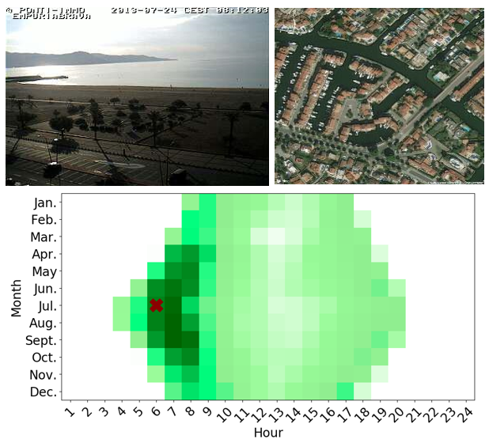

Learning a Dynamic Map of Visual Appearance

Abstract:
The appearance of the world varies dramatically not only from place to place but also from hour to hour and month to month. Every day billions of images capture this complex relationship, many of which are associated with precise time and location metadata. We propose to use these images to construct a global-scale, dynamic map of visual appearance attributes. Such a map enables fine-grained understanding of the expected appearance at any geographic location and time. Our approach integrates dense overhead imagery with location and time metadata into a general framework capable of mapping a wide variety of visual attributes. A key feature of our approach is that it requires no manual data annotation. We demonstrate how this approach can support various applications, including image-driven mapping, image geolocalization, and metadata verification.
People:
Highlights:
- Visual Attribute Maps
- Image Retrieval
- Iamge Localization
- Metadata Verification
We propose a general convolutional neural network (CNN) architecture that visual attributes with
overhead images, time, and geolocation. Several qualitative examples are shown in the figure on the right for different attributes over time.
In this qualitative application, we show how we can
use our model to retrieve a set of ground-level images that
would be likely to be observed at a given location and time.
We start with an overhead image, specify a time of interest, and predict the visual attributes. We use the Combine
distance defined in the previous section to find the closest
ground-level images. In Figure 8, we show examples of
images retrieved using this process
we show qualitative localization results generated by our approach. For this experiment,
we used 488,224 overhead images from CVUSA as our reference database. The heatmap represents
the likelihood that an image was captured at a specific location, where red (blue) is more (less) likely.

We focus on verifying the time that an image, with known location, was captured. For a given ground-level image,
we compute the distance between the actual and predicted attributes resulting in a distance for each possible time
The figure on the right shows heatmaps of these distances for one test examples, using our full model and the Combine distance
Related Papers
- Learning a Dynamic Map of Visual Appearance (Tawfiq Salem, Scott Workman, Nathan Jacobs), In: IEEE Conference on Computer Vision and Pattern Recognition (CVPR), 2020.
Bibtex:
@inproceedings{salem2020dynamic,
author = {Salem, Tawfiq and Workman, Scott and Jacobs, Nathan},
booktitle = {{IEEE Conference on Computer Vision and Pattern Recognition (CVPR)}},
title = {{Learning a Dynamic Map of Visual Appearance}},
year = {2020},
}
Cross-View Time (CVT) Dataset:
In our dataset, we have 305 011 ground-level images with the capture time and geolocation. For each image, we have the orthorectified overhead image centered on the geographic location.
Please contact us by email to receive access to the database.